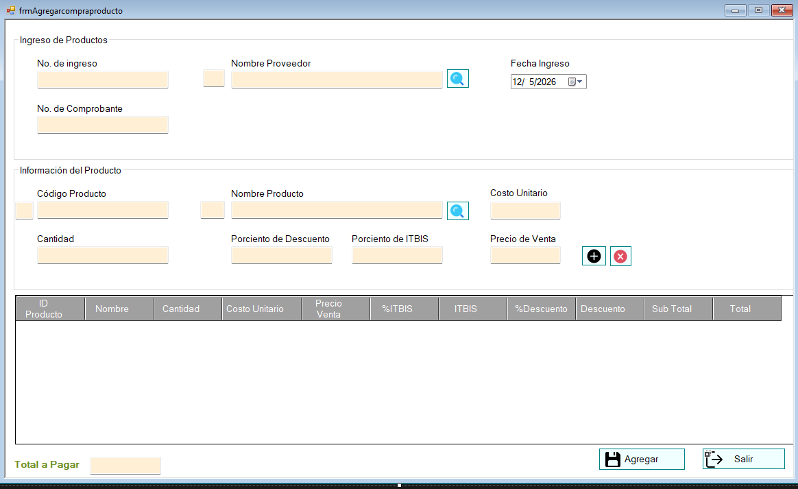
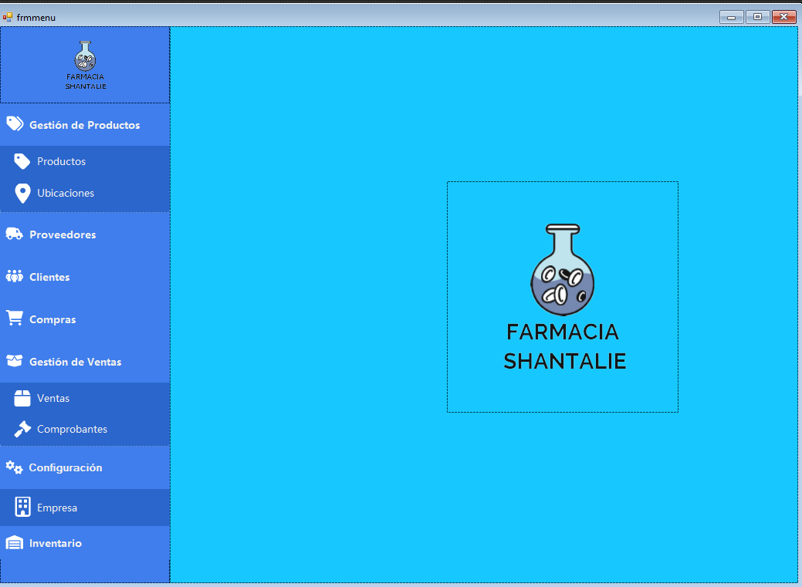
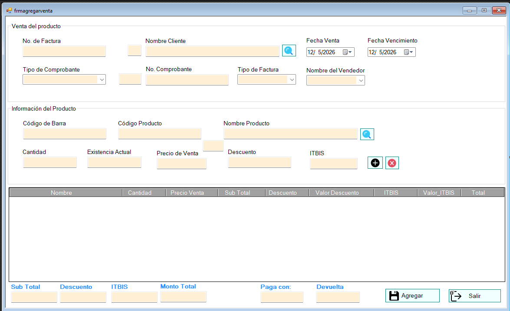

Programming Languages
C#
JavaScript
TypeScript
SQL
HTML5
CSS3
Technology-focused professional with experience in IT support, point-of-sale systems, customer-facing airport operations, and software development. Passionate about leveraging technology to solve real-world business problems.
A practical, operations-aware technology candidate with support, leadership, and software project experience.
Technology-focused professional with experience in IT support, point-of-sale (POS) systems, customer-facing airport operations, and software development. Promoted from POS Retail Support Technician to Lead Technician after supporting business-critical POS environments across more than 100 retail and quick-service restaurant locations nationwide. Skilled in troubleshooting hardware, software, network connectivity, and end-user issues in fast-paced, high-availability environments. Hands-on development experience includes building a pharmacy POS application using C# and Microsoft SQL Server with inventory management, billing, and reporting functionality. Completed the Google IT Support Professional Certificate, pursued application development studies at PUCMM, and actively expanding cloud expertise through AWS Skill Builder and preparation for the AWS Certified Cloud Practitioner certification. Passionate about leveraging technology to solve real-world business problems.
Core technologies, support skills, and methodologies connected to software, cloud, IT support, and business operations.
Support, leadership, operations, and technology exposure across airline and retail/QSR environments.
Projects that connect software development, cloud learning, and practical operational problems.
Airline-inspired incident management system designed to model irregular operations workflows such as delays, cancellations, station issues, baggage disruptions, and recovery actions.
Point-of-sale system built for a pharmacy in the Dominican Republic with inventory management, billing, reporting, and database-backed daily operations.
Some images of the C# and Microsoft SQL Server pharmacy POS project. Sensitive or private business data should be removed or replaced with sample data.

Screen used to register product purchases, supplier information, quantities, unit cost, taxes, discounts, and totals.

Main navigation interface for product management, providers, clients, purchases, sales, configuration, and inventory.

Sales screen designed to manage invoices, clients, products, quantities, discounts, taxes, payment, change, and transaction totals.
Project context: This desktop POS application was built as a practical business software project using C# and Microsoft SQL Server.
Formal technical foundation plus ongoing self-driven learning.
I am continuing to build projects that connect software, cloud, IT support, and airline operations.